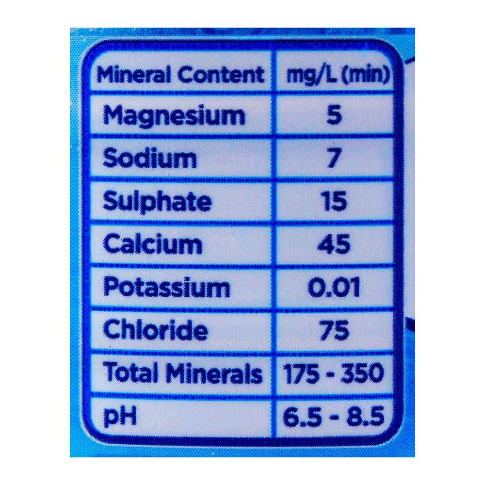

NESTLE PURE LIFE 5 LITRE
ABOUT PRODUCT

Nestlé Pure Life is a popular brand of bottled water produced by Nestlé, one of the largest food and beverage companies globally. Nestlé Pure Life emphasizes purity and quality, often highlighting their water's source and the rigorous filtration processes it undergoes to ensure it meets quality standards. The 5-liter bottle is typically designed for households or businesses that prefer larger quantities of water for drinking, cooking, or other purposes. It's a convenient option for those who want to stock up on water for everyday use. The larger size of the 5-liter bottle means fewer trips to the store for water, providing convenience for consumers who want to ensure they have an ample supply of clean drinking water available at all times. Nestlé often emphasizes its commitment to sustainability and reducing environmental impact. They may offer information about the recyclability of their packaging and any sustainability initiatives related to their bottled water products.
TABLE OF CONTENT
| DESCRIPTION | PACK QTV | PRICE PER BOTTLE (RS) | PRICE PER PACK (RS) |
|---|---|---|---|
| NESTLE 5LITRE | 2 | 145 | 200 |
THE END >-<